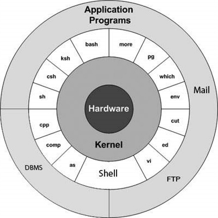

What is Unix ?
The Unix operating system is a set of programs that act as a link between the computer and the user.
The computer programs that allocate the system resources and coordinate all the details of the computer's internals is called the operating system or the kernel.
Users communicate with the kernel through a program known as the shell. The shell is a command line interpreter; it translates commands entered by the user and converts them into a language that is understood by the kernel.
· A user can also run multiple programs at the same time; hence Unix is a multitasking environment.
· There are various Unix variants available in the market. Solaris Unix, AIX, HP Unix and BSD are a few examples. Linux is also a flavor of Unix which is freely available.
· Several people can use a Unix computer at the same time; hence Unix is called a multiuser system.
· A user can also run multiple programs at the same time; hence Unix is a multitasking environment.
Unix Architecture
Here is a basic block diagram of a Unix system :

The main concept that unites all the versions of Unix is the following four basics :
· Kernel − The kernel is the heart of the operating system. It interacts with the hardware and most of the tasks like memory management, task scheduling and file management.
· Shell − The shell is the utility that processes your requests. When you type in a command at your terminal, the shell interprets the command and calls the program that you want. The shell uses standard syntax for all commands. C Shell, Bourne Shell and Korn Shell are the most famous shells which are available with most of the Unix variants.
· Commands and Utilities − There are various commands and utilities which you can make use of in your day to day activities. cp, mv, cat and grep, etc. are few examples of commands and utilities. There are over 250 standard commands plus numerous others provided through 3rd party software. All the commands come along with various options.
· Files and Directories − All the data of Unix is organized into files. All files are then organized into directories. These directories are further organized into a tree-like structure called the filesystem.
System Bootup
If you have a computer which has the Unix operating system installed in it, then you simply need to turn on the system to make it live.
As soon as you turn on the system, it starts booting up and finally it prompts you to log into the system, which is an activity to log into the system and use it for your day-to-day activities.